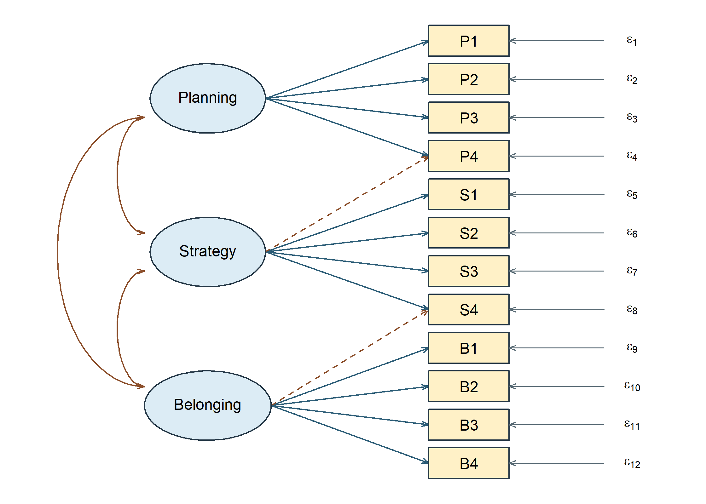
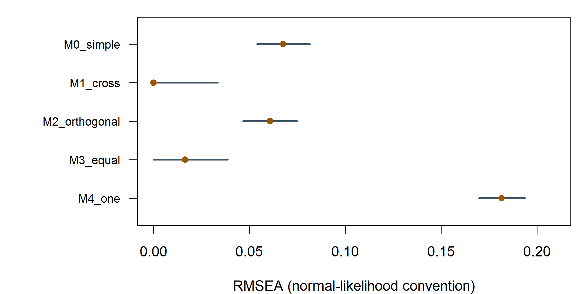
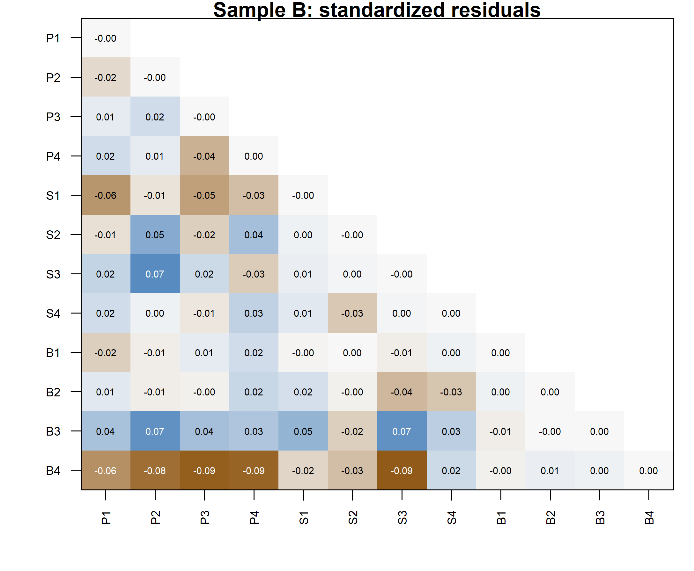
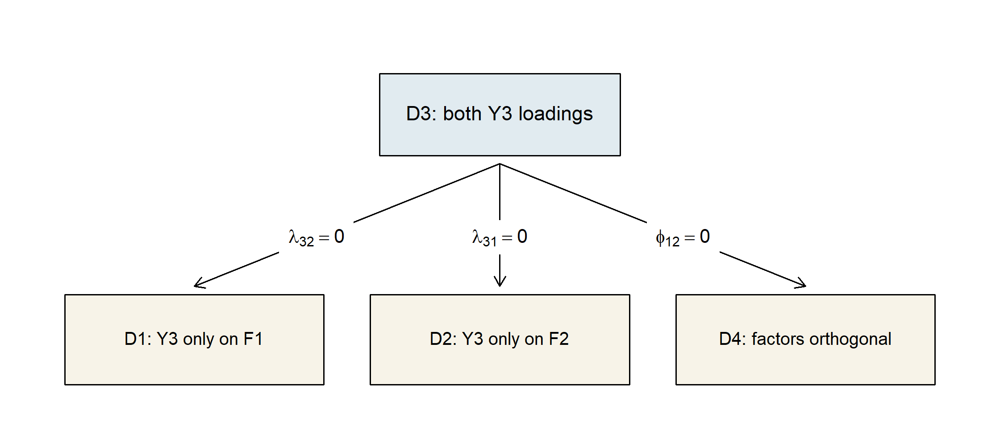
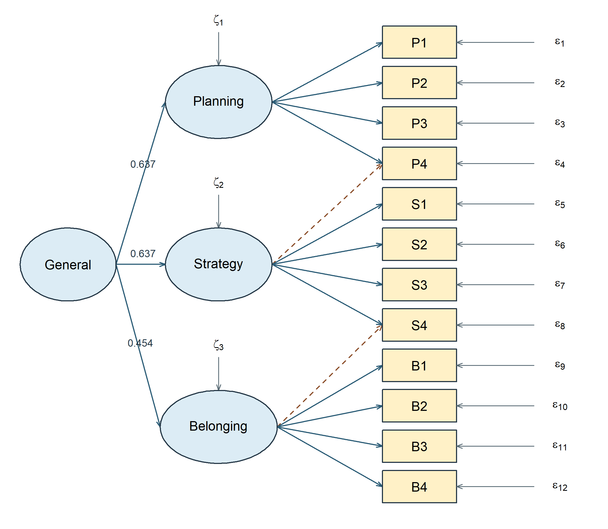
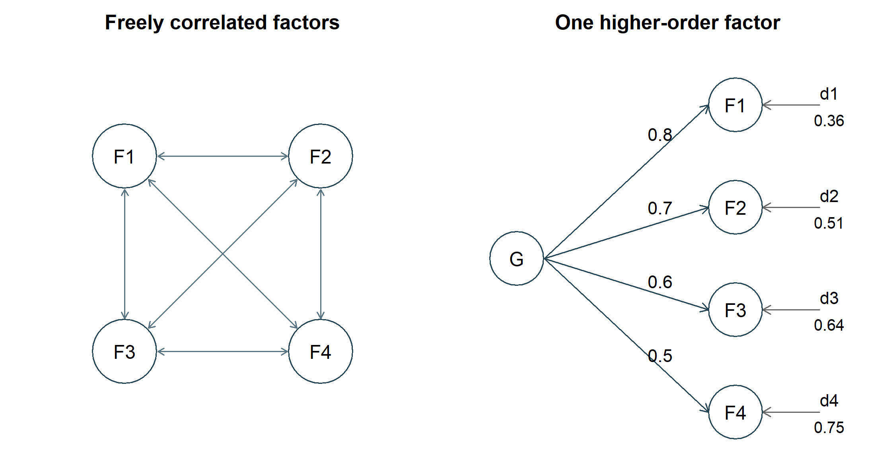
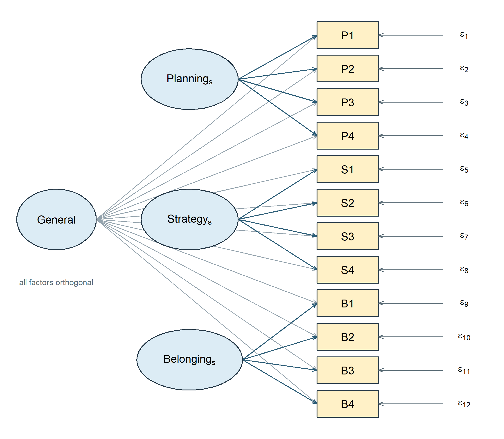
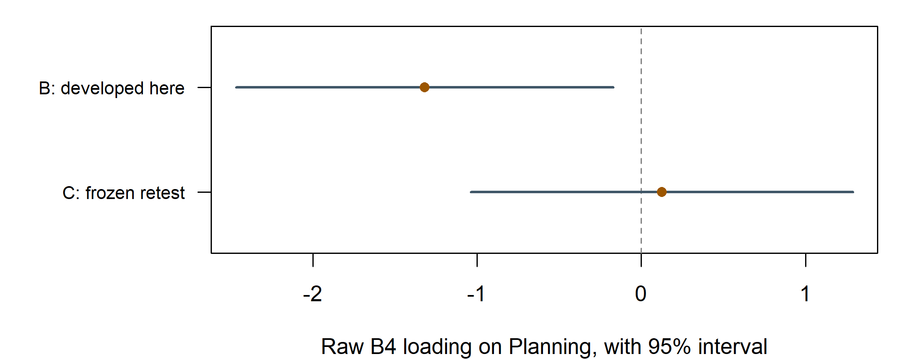
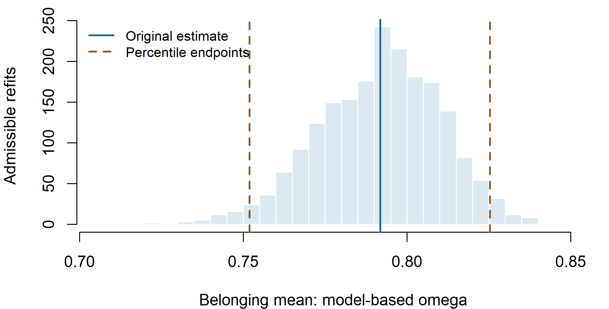
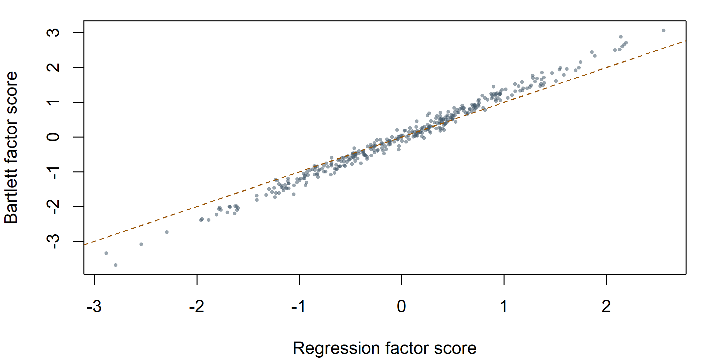

Evaluating and Comparing Confirmatory Factor Models
Contents
NoteChapter overview
This chapter asks what a fitted measurement model has actually earned. We begin with the general CFA model, state one questionnaire specification, and separate five questions that one summary cannot answer at once. We rebuild the discrepancy the estimator minimized, refer it to a reference distribution, and read the familiar global indices as a profile rather than a verdict. We then locate where the model strains, reading residuals on three different scales, and compare planned rivals, saying which comparisons are eligible and which only look like comparisons. Two rival representations of the same twelve items, a higher-order factor and a bifactor model, show that equally good fit can leave the choice open. A separate four-factor population shows when a higher-order model imposes additional testable restrictions. We read modification diagnostics as leads, freeze one suggested change, and retest it on records that played no part in suggesting it; a look back at the known generating population then separates what the sample evidence could reveal from what it could not. The closing section defines a score before calculating its reliability, draws the boundary around factor scores, sets out a bounded report, and opens the structural question the next reading takes up. The work assumes the covariance equation, restrictions, identification, and maximum likelihood estimation developed earlier, and it uses the twelve-indicator confirmation sample, one validation sample spent once, and a separate six-indicator example for compact comparisons. By the end, you will be able to read a fit profile and say what it answers and what it leaves open, locate and describe local discrepancy, choose eligible comparisons, specify and count the two extensions, treat a change suggested by the data as a hypothesis that needs fresh evidence, and report an evaluated model together with its limits. Favorable fit remains evidence about reproduced covariance, not about construct reality, measurement invariance, or causal direction. One appendix develops the interval and score calculations.
A course team runs its learning-experience questionnaire through a confirmatory factor analysis, prints a table of fit indices, and reports that the model fits well. The table is favorable. A reader who stops there still does not know whether the twelve items behave as the three declared domains require, whether one item leans toward a domain it was not written for, or whether the same model would look this good on records that had no part in shaping it. A favorable summary and a defensible measurement claim are different things, and the distance between them is what this chapter is about.
Our question is therefore narrower than whether the model fits:
Given a converged, admissible estimate of one fixed measurement model on one confirmation sample, what does the available evidence support saying about that model and its intended uses, and what does it leave open?
The basic sequence is to formulate the model, establish identification, estimate its parameters, check the solution, and evaluate global and local discrepancy. Here we deepen that evaluation: how the indices are calibrated, which comparisons are eligible, which rival measurement structures the same indicators admit, and how a change suggested by the data alters analytic status. The questionnaire’s development, confirmation and validation samples make those decisions visible. Its specification and sample roles are restated below, so this analysis can be followed as a complete case.
1 From an estimated model to an evaluation record
1.1 Restate the model, then its declared application
For person \(i\), a linear confirmatory factor model is
\[ \mathbf y_i=\boldsymbol\nu+\boldsymbol\Lambda\boldsymbol\eta_i+ \boldsymbol\epsilon_i,\qquad E(\mathbf y_i)=\boldsymbol\nu+\boldsymbol\Lambda\boldsymbol\alpha, \qquad \boldsymbol\Sigma=\boldsymbol\Lambda\boldsymbol\Phi \boldsymbol\Lambda^{\mathsf T}+\boldsymbol\Theta. \]
The \(p\) observations in \(\mathbf y_i\) are indicators; the \(m\) variables in \(\boldsymbol\eta_i\) are latent factors. The intercepts are \(\boldsymbol\nu\), the factor means are \(\boldsymbol\alpha\), and the \(p\times m\) loading matrix \(\boldsymbol\Lambda\) states which factors predict each indicator. Factor covariance \(\boldsymbol\Phi\) and residual covariance \(\boldsymbol\Theta\) are different parts of the model. The covariance equation assumes finite second moments and zero factor–residual covariances. Diagonal \(\boldsymbol\Theta\) specifies residual uncorrelatedness; with jointly normal conditional residuals it also gives conditional independence. Normal-theory tests require further sampling and distributional conditions, beyond the covariance equation itself.
Each factor needs a scale, set by a marker loading or a fixed variance. Only freely estimated distinct parameters enter \(t\). A covariance-only model has \(u=p(p+1)/2\) distinct observed moments and, when identified with independent regular restrictions, \(df=u-t\). Nonnegative df is a count check rather than proof that every parameter is recoverable. Estimation seeks the admissible parameter values that best reproduce the observed moments under a declared criterion; fit evaluation then examines the discrepancy that remains.
The application concerns twelve continuous learning-experience indicators: P1–P4 describe planning, S1–S4 strategy use, and B1–B4 belonging. Sample A was used to develop a candidate with three correlated factors and two secondary relations: P4 additionally loads on Strategy and S4 on Belonging. That fixed candidate, called M1-cross to keep its history traceable, is estimated on Sample B. All other cross-loadings and all residual covariances are zero. Factor variances equal one; the model is covariance-only.
The paths are a measurement hypothesis. Neither their direction nor their estimated size proves that the named construct causes the responses.
| Parameter block | Free entries | Fixed restrictions |
|---|---|---|
| Loadings | 14 | Other 22 loadings zero |
| Factor covariance | 3 | Three factor variances equal one |
| Indicator residuals | 12 variances | All 66 residual covariances zero |
| Total | 29 | \(78-29=49\) degrees of freedom |
The fit uses the original full-precision Sample B records, with the same item order and conventions throughout. A comparison made after changing the observations, metric or estimator would answer a different question.
Written as parameter matrices, the specification is a \(12\times3\) loading matrix whose free entries follow the frozen pattern, a \(3\times3\) factor covariance matrix with unit diagonal, and a \(12\times12\) diagonal residual covariance matrix:
\[ \boldsymbol\Lambda= \begin{bmatrix} \lambda_{1,1} & 0 & 0\\ \lambda_{2,1} & 0 & 0\\ \lambda_{3,1} & 0 & 0\\ \lambda_{4,1} & \lambda_{4,2} & 0\\ 0 & \lambda_{5,2} & 0\\ 0 & \lambda_{6,2} & 0\\ 0 & \lambda_{7,2} & 0\\ 0 & \lambda_{8,2} & \lambda_{8,3}\\ 0 & 0 & \lambda_{9,3}\\ 0 & 0 & \lambda_{10,3}\\ 0 & 0 & \lambda_{11,3}\\ 0 & 0 & \lambda_{12,3} \end{bmatrix}, \qquad \boldsymbol\Phi= \begin{bmatrix} 1 & \phi_{21} & \phi_{31}\\ \phi_{21} & 1 & \phi_{32}\\ \phi_{31} & \phi_{32} & 1 \end{bmatrix}, \qquad \boldsymbol\Theta=\operatorname{diag}(\theta_{1},\ldots,\theta_{12}). \]
Rows run P1–P4, S1–S4, B1–B4 and columns run Planning, Strategy, Belonging, so \(\lambda_{4,2}\) is P4’s secondary loading on Strategy and \(\lambda_{8,3}\) is S4’s on Belonging. Every entry shown as \(0\) is fixed rather than estimated. The 14 free loadings, 3 factor covariances and 12 residual variances are the 29 free parameters, and \(78-29=49\) leaves the degrees of freedom recorded above.
The estimator is normal-theory maximum likelihood applied to the raw records, with the sample covariance formed under the divisor \(N\), the three factor variances fixed at one, no mean structure, listwise deletion, expected information, and the conventional standard errors and test statistic. Those settings are held fixed for every model in this chapter, which is what keeps the comparisons later in it eligible.
Before interpreting a fit statistic, check the item order and free-parameter count, convergence, gradients and admissibility. These checks pass for the declared model. Retaining software versions alongside the data and model declarations makes the numerical results reproducible.
1.2 Separate five questions
| Question | Evidence | What a favorable answer does not establish |
|---|---|---|
| Did the optimizer finish? | Convergence, gradients, warnings | Admissibility or adequacy |
| Is the solution admissible? | Variances, covariance matrices, local rank | Small model discrepancy |
| How large is global discrepancy? | Model test and fit profile | Absence of important local problems |
| Where are discrepancies located? | Residual patterns and parameter diagnostics | A unique explanation |
| Is interpretation defensible? | Content, estimates, uncertainty, analytic history | Validity for every score use |
These questions are related but not interchangeable. An optimizer can converge to a badly fitting model. A globally favorable fit profile can coexist with a questionable item or weakly identified parameter. A well-measured factor can still be used in an inappropriate substantive analysis.
The conventional output order often begins with the test statistic, but our reading order starts with the model and estimation contract. Fit measures belong to a specified analysis, not to the data set in isolation.
1.3 Keep the evidence roles visible
Sample A developed the loading candidate. Sample B estimates and evaluates that fixed candidate and its planned rivals. A new relation suggested by B is exploratory in B, even if only one path is changed. Sample C can assess that relation independently only after the changed specification is fixed. All three samples have 360 cases from the same documented synthetic continuous population; no new seed is selected to obtain a preferred teaching outcome.
The six-indicator simulated example is separate. Its 500 newly generated continuous records illustrate four model specifications and transparent likelihood comparisons. They are drawn from a different population than the SLE samples and cannot borrow those samples’ development or confirmation status.
2 From the ML discrepancy to a global fit profile
The basic fit profile combines an exact-fit test, approximate discrepancy, improvement over a reference model, and average standardized residual size. This section develops their calibration and their different limitations. The discrepancy comes first, because the statistic it produces is what the exact-fit test refers to a reference distribution and what the approximation and incremental indices rescale.
2.1 Reconstruct the discrepancy before interpreting it
Write the implied covariance as
\[ \boldsymbol\Sigma(\boldsymbol\vartheta) =\boldsymbol\Lambda\boldsymbol\Phi\boldsymbol\Lambda^{\mathsf T} +\boldsymbol\Theta. \]
For \(p\) continuous outcomes and the declared sample covariance,
\[ F_{\mathrm{ML}}= \log|\boldsymbol\Sigma(\boldsymbol\vartheta)| +\operatorname{tr}\{\mathbf S\boldsymbol\Sigma(\boldsymbol\vartheta)^{-1}\} -\log|\mathbf S|-p. \]
The first two terms depend on the model. The remaining terms make the discrepancy zero when the implied covariance equals the observed one. The fitted value is the minimum over the specified parameter space, not necessarily a small number by any substantive standard.
In our normal-likelihood analysis, \(\mathbf S=\mathbf S_N\) uses divisor \(N\), and the model statistic is
\[ T_M=N\widehat F_{\mathrm{ML}}. \]
For M1-cross, the reconstructed discrepancy is 0.134653; multiplying by 360 gives 48.475. The calculation agrees with the stored software statistic. This check catches mismatched divisors, a wrongly ordered matrix, or an incorrect dimension term before those mistakes propagate into fit-index calculations.
The reconstruction is arithmetic on two matrices any fitted object already holds: the sample covariance and the implied covariance. Take the log determinant of each, add the trace of the implied inverse times the sample matrix, subtract the number of outcomes, and multiply the result by the sample size.
2.2 Do not mix normal, Wishart, and robust conventions
Chapter 3, Section 7.3 records the divisor convention and the normal-against-Wishart likelihood choice, and neither is developed a second time here: R’s ordinary sample covariance uses divisor \(N-1\), raw-data normal ML in lavaan converts internally to divisor \(N\), and Wishart ML uses an \(N-1\) covariance and test multiplier. The official estimator documentation explains this distinction. A small difference between test statistics can be a convention difference rather than a scientific disagreement, and a profile that reports one index under one convention and another index under a second is not one profile.
Changing an observed unit can leave ML discrepancy unchanged when the entire model and all restrictions are transformed consistently. Leaving a raw-loading equality unchanged after changing an item’s unit is not such a transformation. Scale invariance is conditional on comparing equivalent model specifications.
The present calculations use conventional ML throughout. Later robust ML procedures adjust standard errors and tests for particular forms of nonnormality; one cannot subtract two displayed scaled statistics and assume an ordinary difference test. FIML later handles missing continuous observations under stated missingness and model assumptions. Neither topic supplies a categorical-indicator measurement model, which is outside this series’ present scope.
2.3 Large-sample properties are conditional
Consistency concerns increasing sample size under identification and other appropriate conditions, not merely increasing the number of indicators. Asymptotic normality of estimates and chi-square references are approximations, not guarantees for every finite sample or boundary configuration. More indicators can add information, but also add parameters, content heterogeneity, and possible misspecification.
Different starts need not always converge to the same optimum. Negative residual variances, singular factor covariance matrices, or very large standard errors call for investigation. Here all planned SLE and example-model fits pass the recorded convergence and admissibility gates. That makes ordinary evaluation interpretable; it does not predetermine the evaluation’s conclusion.
2.4 The exact-fit null
The covariance-only null is that there exists an admissible parameter vector such that
\[ H_0:\boldsymbol\Sigma_{\mathrm{population}} =\boldsymbol\Sigma(\boldsymbol\vartheta). \]
Under regularity and the conventional ML assumptions, \(T_M\ \dot\sim\ \chi^2_{df_M}\) when that null holds. The dot marks an asymptotic approximation. The df refer to distinct covariance restrictions after identification and parameter accounting, not \(N\) minus the number of regression coefficients.
For M1-cross, \(T_M=\) 48.475 on 49 df, with \(p=\) 0.494. We fail to reject exact fit under this test. We do not “accept the true model.” Sampling variability, power, alternative covariance-equivalent models, and departures not well detected by the test remain relevant.
Large samples can detect small fixed discrepancies. That is not a reason to declare the test untrustworthy solely because \(N\) is large; it is a reason to separate evidence against exact fit from the magnitude and consequences of the discrepancy. Conversely, a small sample can fail to reject a consequential departure.
2.5 RMSEA: discrepancy per degree of freedom
The root mean square error of approximation (Steiger & Lind, 1980) measures discrepancy per degree of freedom rather than total discrepancy, which is what makes it comparable across models of different size. For the present \(N\) convention,
\[ \widehat{\mathrm{RMSEA}} =\sqrt{\max\left\{\frac{T_M-df_M}{N\,df_M},0\right\}}. \]
Under the commonly taught \(N-1\) convention, replace \(N\) by \(N-1\). State which calculation is being used. The numerator estimates a noncentrality contribution; it is truncated at zero when \(T_M\leq df_M\). Thus RMSEA equal to zero does not require zero residuals or \(T_M=0\).
The interval is obtained by inverting a noncentral chi-square reference and transforming its noncentrality limits onto the RMSEA scale; that inversion is completed in the appendix. A 90% interval is conventional in this literature, whereas the parameter intervals in Chapter 3 were 95%. These different levels should be labeled, not silently mixed.
For M1-cross, RMSEA is 0.000, with 90% interval [0.000, 0.034]. The zero estimate arises because the test statistic is slightly below its df. The nonzero upper limit expresses uncertainty about population approximation error.
Low-df models can have unstable RMSEA estimates and broad intervals. A point estimate without its interval can conceal that uncertainty. Nor does an interval imply equal plausibility of every value inside it. Explicit close-fit or not-close-fit hypotheses require stated population thresholds and their own tests; a threshold should not be inferred retroactively from whichever endpoint looks favorable. The interval and power perspective is developed by MacCallum et al. (1996).
2.6 CFI and TLI need a baseline
Incremental indices compare a model against a reference rather than against exact fit, so the reference has to be stated before the number means anything (Hu & Bentler, 1999). For continuous covariance analysis, the usual independence baseline frees the observed variances and fixes covariances to zero. With twelve indicators, it has 66 covariance restrictions. It is not a competing substantive theory of the three factors; it supplies a reference for incremental improvement.
One conventional CFI expression is
\[ \widehat{\mathrm{CFI}} =1-\frac{\max(T_M-df_M,0)} {\max(T_M-df_M,T_B-df_B,0)}. \]
If the denominator is zero, this expression requires special handling; it is not an ordinary ratio with a meaningful zero denominator. In our record the baseline statistic is 1594.445 on 66 df, so that issue does not arise. A high CFI means the model improves substantially relative to this baseline under the stated correction, not that the construct interpretation has been established.
For positive baseline discrepancy, TLI can be written
\[ \widehat{\mathrm{TLI}} =\frac{T_B/df_B-T_M/df_M}{T_B/df_B-1}. \]
Unlike a correlation coefficient, this formula need not remain between zero and one. A value slightly above one is possible when \(T_M<df_M\); it is not “better than perfect measurement.” We retain the software’s uncapped conventional value rather than altering it to look more familiar.
Baseline dependence explains why a model with substantial local discrepancy can still have a high incremental index. The baseline may be much worse. An index’s favorable appearance must be interpreted relative to the question it answers.
2.7 Compare the planned profiles
| Model | T | df | p | RMSEA | CI90 | CFI | TLI | SRMR |
|---|---|---|---|---|---|---|---|---|
| M0_simple | 135.142 | 51 | <.001 | 0.068 | [0.054, 0.082] | 0.945 | 0.929 | 0.063 |
| M1_cross | 48.475 | 49 | 0.494 | 0.000 | [0.000, 0.034] | 1.000 | 1.000 | 0.032 |
| M2_orthogonal | 121.189 | 52 | <.001 | 0.061 | [0.047, 0.075] | 0.955 | 0.943 | 0.139 |
| M3_equal | 54.948 | 50 | 0.293 | 0.017 | [0.000, 0.039] | 0.997 | 0.996 | 0.039 |
| M4_one | 695.266 | 54 | <.001 | 0.182 | [0.170, 0.194] | 0.580 | 0.487 | 0.134 |

The profiles do not reduce to unanimous votes. M2-orthogonal has CFI about .955 but SRMR about .139: appreciable standardized residual discrepancy remains despite a sizable improvement over independence. M3-equal has a favorable global profile even though the targeted loading-equality test is opposed. Global approximation and a focused parameter restriction are different questions.
M1-cross has the most favorable overall balance among these prespecified alternatives. M0-simple leaves more discrepancy after forcing the two secondary loadings to zero. M4-one does not provide a satisfactory broad covariance representation relative to these multi-factor alternatives. These are judgments about this synthetic sample and candidate set, not universal thresholds for instrument validation.
3 Locate local discrepancy
3.1 Three residual scales
The raw covariance residual is
\[ e_{jk}=s_{jk}-\widehat\sigma_{jk}. \]
Its unit is the product of the two indicators’ units. A residual of 10 has a different meaning for indicators with SDs 2 and 3 than for indicators with SDs 10 and 12. Two useful rescalings are
\[ e_{jk}^{(s)}=\frac{s_{jk}-\widehat\sigma_{jk}} {\sqrt{s_{jj}s_{kk}}}, \qquad e_{jk}^{(r)}=r_{jk}-\widehat r_{jk}. \]
The first divides both observed and fitted covariance by observed SDs. The second separately converts each covariance matrix to a correlation matrix. They coincide off the diagonal when the observed and fitted variances match; otherwise they can differ. Neither is a residual divided by its sampling standard error. A standardized residual in the variance-scaling sense is not automatically a \(z\) test.
For this covariance-only ML model with free residual variances, fitted variances closely reproduce observed variances, so the two off-diagonal rescalings are numerically very close. The script nevertheless calculates them separately and checks the actual relationship rather than assuming it in every future model.
3.2 SRMR is a root mean square, not a mean absolute residual
For the covariance-based convention verified here,
\[ \mathrm{SRMR}=\sqrt{\frac{2}{p(p+1)} \sum_{j=1}^p\sum_{k=1}^j\left(e_{jk}^{(s)}\right)^2}. \]
The average includes the diagonal and one triangle. Squaring gives large discrepancies extra influence, and the square root returns the scale to standardized covariance units. This differs from the mean absolute residual and from Chapter 2’s off-diagonal-only RMS.
The direct calculation gives 0.032, matching the package SRMR. A small summary does not imply every cell is small: many near-zero cells can dilute a few larger ones. Mean structures, multiple groups, and alternative estimators require their own checked conventions.
3.3 Read patterns in the twelve-item system

| Item1 | Item2 | Observed | Implied | Raw | Std | Correlation |
|---|---|---|---|---|---|---|
| B4 | S3 | \(-0.371\) | 10.660 | \(-11.031\) | \(-0.093\) | \(-0.093\) |
| B4 | P3 | \(-0.270\) | 11.407 | \(-11.677\) | \(-0.092\) | \(-0.092\) |
| B4 | P4 | 2.598 | 10.883 | \(-8.285\) | \(-0.088\) | \(-0.088\) |
| B4 | P2 | 1.789 | 10.597 | \(-8.809\) | \(-0.082\) | \(-0.082\) |
| S3 | P2 | 33.518 | 24.903 | 8.615 | 0.072 | 0.072 |
| B3 | P2 | 16.920 | 11.118 | 5.802 | 0.070 | 0.070 |
| B3 | S3 | 17.477 | 11.183 | 6.293 | 0.069 | 0.069 |
| B4 | P1 | 3.409 | 8.554 | \(-5.145\) | \(-0.061\) | \(-0.061\) |
For B4 and S3, the observed covariance is -0.371 and the implied covariance is 10.660. Their raw residual is -11.031; scaled by the observed SDs it is -0.093. The model overpredicts this pair’s covariance. Several other negative cross-domain residuals also involve B4, so it is reasonable to inspect that item rather than treat the largest cell as an isolated software signal.
B4 concerns connection to the institution as a whole, whereas B1–B3 refer more directly to peers, participation, and classroom voice. That distinction suggests questions about content breadth and local heterogeneity. It does not uniquely imply that B4 should load negatively on Planning. A cross-loading, an omitted narrower factor, a response process difference, and sampling fluctuation can leave overlapping residual patterns.
Before modifying anything, check coding, distributions, data dependence, and whether the proposed relation changes the intended measurement meaning. A globally favorable fit does not prohibit local investigation, but it also does not require a modification merely to make every residual smaller.
4 Compare planned rivals and test constraints
4.1 Establish nesting by exact restrictions
For compatible conventional ML fits, if restricted model \(R\) is regularly nested in unrestricted model \(U\),
\[ \Delta T=T_R-T_U, \qquad \Delta df=df_R-df_U, \qquad \Delta T\ \dot\sim\ \chi^2_{\Delta df} \]
under the null restrictions and regularity conditions. The null is a population parameter restriction, not that the two observed fit statistics are literally equal. The larger model cannot have a worse optimized likelihood if both optimizations have found the corresponding optima. That monotonicity alone does not establish the chi-square reference.
For M0 versus M1, set the P4-on-Strategy and S4-on-Belonging loadings to zero. For M2 versus M1, set all three factor correlations to zero. For M3 versus M1, impose the one raw-loading equality, requiring the P1 and P2 loadings on Planning to take a common value. These are different hypotheses with different df changes.
The compatible fits must use identical indicators, cases, data scale, mean structure, likelihood convention, and sampling assumptions. A smaller free-parameter count is not proof of nesting. The one-factor model’s relation to a three-factor model passes through degenerate latent covariance configurations, so we do not assign an ordinary chi-square difference test to M4 merely by subtracting df.
| Comparison | Delta T | Delta df | p |
|---|---|---|---|
| M0_vs_M1 | 86.667 | 2 | <.001 |
| M2_vs_M1 | 72.714 | 3 | <.001 |
| M3_vs_M1 | 6.473 | 1 | 0.011 |
The two zero cross-loading restrictions cost 86.667 chi-square units on two df. The orthogonality restrictions cost 72.714 on three df. Under this family, both are strongly opposed. The raw-loading equality costs 6.473 on one df, with \(p=\) 0.011. Its relatively favorable global fit profile did not make that particular restriction innocuous.
Failure to reject a restriction would not establish equivalence. It would leave the data insufficient to reject it at the chosen level under that test. If practical equivalence is the question, specify a meaningful discrepancy region and an appropriate procedure rather than translate nonsignificance into equality.
4.2 Four planned models on the six-indicator example
The separate example specifies the following models before the six-indicator example is generated. All use fixed-factor scaling, free residual variances, diagonal residual covariance, and conventional normal ML.
| Model | F1 indicators | F2 indicators | Factor relation | Free / df |
|---|---|---|---|---|
| D1 | Y1, Y2, Y3 | Y4, Y5, Y6 | Correlated | 13 / 8 |
| D2 | Y1, Y2 | Y3, Y4, Y5, Y6 | Correlated | 13 / 8 |
| D3 | Y1, Y2, Y3 | Y3, Y4, Y5, Y6 | Correlated | 14 / 7 |
| D4 | Y1, Y2, Y3 | Y3, Y4, Y5, Y6 | Orthogonal | 13 / 8 |

| Model | T | df | p | RMSEA | CI90 | CFI | TLI | SRMR |
|---|---|---|---|---|---|---|---|---|
| D1 | 42.463 | 8 | <.001 | 0.093 | [0.067, 0.121] | 0.974 | 0.952 | 0.053 |
| D2 | 334.998 | 8 | <.001 | 0.286 | [0.260, 0.312] | 0.756 | 0.542 | 0.173 |
| D3 | 8.469 | 7 | 0.293 | 0.020 | [0.000, 0.061] | 0.999 | 0.998 | 0.016 |
| D4 | 17.980 | 8 | 0.021 | 0.050 | [0.018, 0.081] | 0.993 | 0.986 | 0.068 |
D1 has CFI about .974 but RMSEA about .093, with a 90% upper limit above .12. This is another reason not to label models by one index. D3’s additional loading changes the covariance representation and substantially reduces discrepancy. The D1–D3 difference is 33.994 on one df. Its result is computed for this new six-indicator example; it is not inherited from an older example with different data.
The two-indicator F1 block in D2 is not isolated: it is linked through a freely estimated nonzero factor covariance to a factor with several indicators. That distinguishes it from Chapter 3’s orthogonal isolated- block counterexample. The actual numerical fits pass the local and admissibility checks. A generic “two indicators always fail” rule would miss the role of the rest of the model.
4.3 Score, Wald, and LR: three views of one restriction
In D2, \(\lambda_{31}=0\): Y3 has no F1 loading. D3 frees it. The score test uses the restricted fit and asks whether the likelihood has a slope suggesting that release. A modification index is the corresponding local one-parameter score statistic. The Wald test uses the unrestricted estimate and its uncertainty. The LR test fits both and compares their optimized likelihoods.
| Test | Statistic | df |
|---|---|---|
| Score (MI in D2) | 231.629 | 1 |
| Wald (D3 loading) | 360.919 | 1 |
| LR (D2 versus D3) | 326.529 | 1 |
The numbers are not interchangeable. Here the omitted loading is large enough that the local score approximation and unrestricted Wald approximation differ appreciably from the actual LR change. Their asymptotic relationship under regular local conditions does not require exact numerical agreement in every finite example.
For equality constraints, use a score test designed for labeled constraints rather than assuming the ordinary zero-parameter MI table tests every labeled equality. The chapter’s analysis does not request MIs for the equality-constrained models, avoiding that misinterpretation.
4.4 AIC and BIC compare eligible likelihoods
For log likelihood \(\ell(\widehat{\boldsymbol\vartheta})\) and the software’s effective parameter count \(q\),
\[ \mathrm{AIC}=-2\ell+2q, \qquad \mathrm{BIC}=-2\ell+q\log N. \]
Smaller values indicate a relative preference within the eligible set under each criterion’s tradeoff. Neither is a model-test \(p\) value, an absolute adequacy index, or a guarantee that the preferred candidate is scientifically meaningful. AIC and BIC can disagree because they penalize complexity differently.
| Model | logl | npar | aic | bic |
|---|---|---|---|---|
| M0_simple | \(-15249.318\) | 27 | 30552.636 | 30657.561 |
| M1_cross | \(-15205.984\) | 29 | 30469.969 | 30582.666 |
| M2_orthogonal | \(-15242.342\) | 26 | 30536.683 | 30637.722 |
| M3_equal | \(-15209.221\) | 28 | 30474.442 | 30583.252 |
| M4_one | \(-15529.380\) | 24 | 31106.760 | 31200.027 |
For M1, the package count is 29. Substituting its log likelihood and \(N=360\) reproduces both criteria. The same observations and outcomes make these rows comparable; the one-factor model can enter this relative likelihood comparison without being assigned a regular nested LR reference.
D1 and D2 provide a compact nonnested comparison with the same six outcomes and 500 cases. Their AICs are 14135.814 and 14428.350, respectively. D1 has the smaller value, but D3’s profile still matters in the larger candidate set. Being preferable to a poor alternative does not establish adequate fit.
Do not compare AIC/BIC across A, B, and C, across item subsets or parcels, or across incompatible likelihood definitions. Do not carry an EFA statistic with the same printed name into this table without checking its exact definition. Eligibility precedes arithmetic.
4.5 Loading equality is not full parallelism
M3 tests a raw-loading equality for P1 and P2. As a separate teaching sensitivity, V1 constrains their residual variances equal while leaving their loadings free. V1 is not retroactively listed as an A-fixed rival; it illustrates a different measurement restriction. Its LR difference from M1 is 9.158 on one df, with \(p=\) 0.002.
These restrictions concern different aspects of the model and are scale-dependent. Equal loadings plus equal residual variances are still not a complete statement about parallel measurements when intercepts and means matter. Equal intercepts and the appropriate common true-score structure must also be considered. Nonsignificant tests would not establish exact parallelism, and a loading equality for just one pair would not establish it for an entire instrument.
5 Extensions of the measurement model
5.1 Ask what accounts for the factor correlations
M1-cross represents Planning, Strategy, and Belonging as three correlated first-order factors. That representation estimates their associations without claiming what produces them. A higher-order model asks a more restrictive question: can one additional latent variable reproduce the covariance among those first-order factors?
Let \(\boldsymbol\Lambda_l\) contain the item loadings on the first-order factors. A one-factor higher-order model writes
\[ \boldsymbol\eta_l=\boldsymbol\gamma G+\boldsymbol\delta, \qquad \boldsymbol\Phi_l =\boldsymbol\gamma\boldsymbol\gamma^{\mathsf T} +\boldsymbol\Psi_h, \tag{1}\]
where \(G\) has unit variance for convenience and \(\boldsymbol\Psi_h\) is diagonal in this version. Substitution into the measurement covariance gives
\[ \boldsymbol\Sigma =\boldsymbol\Lambda_l (\boldsymbol\gamma\boldsymbol\gamma^{\mathsf T} +\boldsymbol\Psi_h) \boldsymbol\Lambda_l^{\mathsf T} +\boldsymbol\Theta. \tag{2}\]
The components of \(\boldsymbol\delta\) are first-order disturbances: the parts of Planning, Strategy, and Belonging not represented by \(G\). They are not indicator residuals. The diagram retains M1-cross’s two fixed secondary item loadings; changing those while adding \(G\) would confound two model changes.

An arrow from \(G\) to a first-order factor represents a hypothesized common source of covariance. Cross-sectional covariance data do not establish that causal direction. Nor does a favorable fit show that \(G\) has the intended substantive meaning.
5.2 Three correlations determine the candidate higher-order loadings
With three standardized first-order factors and positive nonzero correlations,
\[ \phi_{12}=\gamma_1\gamma_2, \qquad \phi_{13}=\gamma_1\gamma_3, \qquad \phi_{23}=\gamma_2\gamma_3. \]
Multiplying the first two equations and dividing by the third yields
\[ \gamma_1^2=\frac{\phi_{12}\phi_{13}}{\phi_{23}},\qquad \gamma_2^2=\frac{\phi_{12}\phi_{23}}{\phi_{13}},\qquad \gamma_3^2=\frac{\phi_{13}\phi_{23}}{\phi_{12}}. \tag{3}\]
Signs are chosen consistently with the factor orientation. Each ratio must be nonnegative and finite, and the standardized disturbance variances \(1-\gamma_j^2\) must be nonnegative. These are substantive parameter-space conditions, not algebraic decoration.
For the fitted Sample B M1-cross factor correlations, the calculation is:
| Factor | Gamma | Disturbance |
|---|---|---|
| Planning | 0.637 | 0.594 |
| Strategy | 0.637 | 0.595 |
| Belonging | 0.454 | 0.794 |
Thus \(\widehat\gamma_1=\) 0.637, \(\widehat\gamma_2=\) 0.637, and \(\widehat\gamma_3=\) 0.454. For example, the ratio for \(\widehat\gamma_1^2\) is 0.406 times 0.289, divided by 0.289, which equals 0.406.
Under fixed-factor scaling the raw higher-order loadings sit on a different first-order disturbance metric; their standardized values are the axes that reproduce the fitted factor-correlation matrix above. Mixing the raw and standardized columns would break the closed-form check.
5.3 Three factors add no equality degrees of freedom, but admissibility still matters
The correlated model estimates \(m(m-1)/2\) first-order factor correlations. For \(m\ge3\), the regular identified one-factor higher-order form estimates \(m\) higher-order loadings. Its generic covariance-equality restriction count is
\[ \frac{m(m-1)}2-m=\frac{m(m-3)}2. \tag{4}\]
For \(m=3\), this count is zero. Where the inversion in Equation 3 gives a regular interior solution with positive disturbance variances, the three correlations and three higher-order loadings are alternative coordinates locally. The higher-order form adds no equality degrees of freedom there. Its disturbance variances must still be nonnegative, however: these inequality restrictions exclude some otherwise valid factor-correlation matrices.
Before calculating, predict whether every positive-definite three-factor correlation matrix must therefore admit this higher-order representation. Consider
\[ \boldsymbol\Phi_l= \begin{bmatrix}1&.7&.7\\.7&1&.2\\.7&.2&1\end{bmatrix}. \]
Its eigenvalues are \(2.095\), \(.800\), and \(.105\), so it is positive definite. Yet the first inversion gives \(\gamma_1^2=.7(.7)/.2=2.45\), requiring a first-order disturbance variance \(1-2.45=-1.45\). The other squared loadings are \(.2\), with disturbances \(.8\). This is a valid correlated-factor matrix without an admissible one-factor higher-order decomposition. Equal parameter counts have not removed the admissibility restriction.
The fitted Sample B correlations do lie in the admissible region. Their higher-order coordinates therefore reproduce M1-cross’s optimum:
| Model | T | df | p | RMSEA | CI90 | CFI | TLI | SRMR |
|---|---|---|---|---|---|---|---|---|
| M1_cross | 48.475 | 49 | 0.494 | 0.000 | [0.000, 0.034] | 1.000 | 1.000 | 0.032 |
| Higher_order | 48.475 | 49 | 0.494 | 0.000 | [0.000, 0.034] | 1.000 | 1.000 | 0.032 |
| Bifactor | 69.258 | 42 | 0.005 | 0.042 | [0.023, 0.060] | 0.982 | 0.972 | 0.046 |
Both forms have 29 free covariance parameters, 49 df, the same fitted covariance matrix to numerical tolerance, and the same likelihood, AIC, and BIC. Fit cannot choose between their substantive interpretations at this solution. Evidence beyond reproduced covariance must support the intended construct representation. The matching fit does not establish global equivalence of the two admissible model families or a general-factor cause.
For \(m=4\), six factor correlations are replaced by four higher-order loadings, introducing two generic covariance-equality restrictions in addition to the admissibility conditions. A separate constructed population makes these restrictions visible. It contains four first-order factors, each measured by three indicators, and one general factor. Its complete generating model is
\[ \eta_{ik}=\gamma_kG_i+\delta_{ik},\qquad Y_{ikj}=\lambda_j\eta_{ik}+\epsilon_{ikj},\quad k=1,\ldots,4,\quad j=1,2,3. \]
Here \(G\) is standard normal, \(\boldsymbol\gamma=(.8,.7,.6,.5)^{\mathsf T}\), and the independent normal first-order disturbances have variances \((.36,.51,.64,.75)\). Thus every first-order factor has variance one. Each factor’s three indicator loadings are \((1,.8,.6)\), the twelve independent normal indicator residuals have variance \(.36\), and all means and intercepts are zero. Factors, first-order disturbances and indicator residuals are independent except for the relations explicitly stated. These are stipulated population values, not estimates from the questionnaire or a published study.

The resulting first-order covariance is
\[ \boldsymbol\Phi_4= \begin{bmatrix} 1&.56&.48&.40\\ .56&1&.42&.35\\ .48&.42&1&.30\\ .40&.35&.30&1 \end{bmatrix}. \]
In a freely correlated model, its four variances and six covariances are ten free quantities. With \(\operatorname{Var}(G)=1\), the higher-order form has four loadings and four disturbance variances, eight quantities. The difference is two restrictions. Equivalently, the products of disjoint covariances, called tetrad products, must agree:
\[ \phi_{12}\phi_{34}=\phi_{13}\phi_{24}=\phi_{14}\phi_{23} =\gamma_1\gamma_2\gamma_3\gamma_4=.168. \]
The first equality and the second equality are two constraints among the six correlations. They express the idea that one common source accounts for all four factors’ associations.
| Component | Correlated first-order model | Higher-order model |
|---|---|---|
| Free non-marker item loadings | 8 | 8 |
| Free item residual variances | 12 | 12 |
| Free factor-level parameters | 10 | 8 |
| Total free parameters | 30 | 28 |
| Unique observed covariances and variances | 78 | 78 |
| Degrees of freedom | 48 | 50 |
The numerical generating values above define the population used for this illustration; they are not additional fixed constraints in this ledger. The measurement blocks, item order and residual restrictions stay the same between models. Only the factor covariance representation changes.
NotePredict, then explain
Suppose only \(\phi_{12}\) changes from \(.56\) to \(.61\), while every other entry remains fixed. Can a different set of four higher-order loadings reproduce the changed covariance? Decide from the shared-source hypothesis before checking the products.
The changed products are \(.61(.3)=.183\), \(.48(.35)=.168\), and \(.4(.42)=.168\). They no longer agree. The altered matrix remains positive definite, with smallest eigenvalue \(.381\), so it is a valid correlated-factor covariance. It is outside this one-general-factor family with diagonal first-order disturbances. Positive definiteness answers whether the covariance is admissible; the tetrads answer whether it obeys the proposed structural restrictions. In a sample, discrepancies among estimated products would require uncertainty assessment. Here the population is known, so no sample size, standard error or significance test is being invented.
5.4 A bifactor model allocates item covariance directly
A standard bifactor model takes a different route. Every item loads directly on one general factor and on one assigned domain-specific factor:
\[ Y_{ij}=\nu_j+\lambda_{jg}G_i+\lambda_{js}S_{is}+\epsilon_{ij}. \]
In the version fitted here, \(G\), Planning-specific, Strategy-specific, and Belonging-specific are mutually orthogonal, residual covariances are zero, and each item has exactly one specific loading. A specific factor represents common variance among its assigned items after the general factor is held constant; it is not an item residual.

The corresponding parameter matrices are explicit about orthogonality:
\[ \boldsymbol\Lambda_B= \begin{bmatrix} \boldsymbol\lambda_{g,P} & \boldsymbol\lambda_{s,P} & \mathbf 0 & \mathbf 0\\ \boldsymbol\lambda_{g,S} & \mathbf 0 & \boldsymbol\lambda_{s,S} & \mathbf 0\\ \boldsymbol\lambda_{g,B} & \mathbf 0 & \mathbf 0 & \boldsymbol\lambda_{s,B} \end{bmatrix}, \qquad \boldsymbol\Phi_B=\mathbf I_4, \qquad \boldsymbol\Theta \text{ diagonal}. \]
Each \(\boldsymbol\lambda\) block is a \(4\times1\) vector of free loadings for one domain’s four items, and each \(\mathbf 0\) is a \(4\times1\) vector of fixed zeros; the columns are General, Planning-specific, Strategy-specific, and Belonging-specific. The identity factor covariance matrix carries the orthogonality: all six between-factor covariances are fixed at zero rather than estimated.
Fixed-factor scaling leaves 24 loadings and 12 item residual variances, so \(t=36\) and \(df=78-36=42\). Relative to M1-cross, the bifactor adds a general loading for every item but also removes the three factor correlations and replaces the two M1 secondary loadings with exclusive domain-specific assignments. It is therefore a distinct, nonnested rival, not M1 plus twelve harmless arrows. An ordinary likelihood-ratio difference test between the two is not licensed.
| Item | General | Factor | Specific | p specific |
|---|---|---|---|---|
| P1 | 0.322 | Planning_s | 0.701 | <.001 |
| P2 | 0.329 | Planning_s | 0.671 | <.001 |
| P3 | 0.262 | Planning_s | 0.637 | <.001 |
| P4 | 0.554 | Planning_s | 0.476 | <.001 |
| S1 | 0.672 | Strategy_s | 0.328 | 0.007 |
| S2 | 0.628 | Strategy_s | 0.385 | 0.005 |
| S3 | 0.611 | Strategy_s | 0.316 | 0.007 |
| S4 | 0.889 | Strategy_s | \(-0.180\) | 0.570 |
| B1 | 0.418 | Belonging_s | 0.776 | <.001 |
| B2 | 0.344 | Belonging_s | 0.716 | <.001 |
| B3 | 0.326 | Belonging_s | 0.521 | <.001 |
| B4 | 0.194 | Belonging_s | 0.411 | <.001 |
The bifactor fit converges, has a full-rank local derivative matrix, and has positive estimated residual variances. Yet the Strategy-specific loading for S4 is -0.18, with \(p=\) 0.57. That weak negative coefficient is not a numerical failure, but it strains a simple claim that every item carries a clear positive domain-specific signal. The bifactor also has higher AIC and BIC than M1-cross. Greater flexibility and a familiar name do not guarantee a more useful representation. The three-domain higher-order form adds no equality degrees of freedom at the admissible solution considered here; the four-factor case in Section 5.3 shows how that changes when one more domain is present.
5.5 The Schmid-Leiman transformation connects the two forms
The higher-order and bifactor models are related through an algebraic transformation. Following it shows which general-and-specific loading model contains the higher-order form and which restrictions connect them.
Write the higher-order model with first-order loadings \(\boldsymbol\Lambda_l\), second-order loadings \(\boldsymbol\gamma\), first-order disturbance variances \(\boldsymbol\Psi_h\) (diagonal) and item residuals \(\boldsymbol\Theta\). Because the first-order factor covariance is \(\boldsymbol\gamma\boldsymbol\gamma^{\mathsf T}+\boldsymbol\Psi_h\), the implied covariance is
\[ \begin{aligned} \boldsymbol\Sigma &=\boldsymbol\Lambda_l\left(\boldsymbol\gamma\boldsymbol\gamma^{\mathsf T} +\boldsymbol\Psi_h\right)\boldsymbol\Lambda_l^{\mathsf T}+\boldsymbol\Theta\\[2pt] &=\underbrace{(\boldsymbol\Lambda_l\boldsymbol\gamma) (\boldsymbol\Lambda_l\boldsymbol\gamma)^{\mathsf T}}_{\text{general}} +\underbrace{(\boldsymbol\Lambda_l\boldsymbol\Psi_h^{1/2}) (\boldsymbol\Lambda_l\boldsymbol\Psi_h^{1/2})^{\mathsf T}}_{\text{specific}} +\boldsymbol\Theta . \end{aligned} \tag{5}\]
The second line is a bifactor model. This is the Schmid-Leiman transformation (Schmid & Leiman, 1957): a higher-order model rewritten as an orthogonal general factor with loadings \(\boldsymbol\Lambda_l\boldsymbol\gamma\) and specific factors with loadings \(\boldsymbol\Lambda_l\boldsymbol\Psi_h^{1/2}\). Nothing was estimated and nothing was tested; the same covariance structure was written a second way.
What the transformation exposes is a restriction, and it is worth stating precisely, because the general and specific loadings are built from the same first-order matrix. The general column is \(\boldsymbol\Lambda_l\boldsymbol\gamma\) and the specific columns are \(\boldsymbol\Lambda_l\boldsymbol\Psi_h^{1/2}\), so both are determined by \(\boldsymbol\Lambda_l\) together with \(m\) values of \(\gamma\). A standard bifactor model estimates its general and specific loadings freely and is under no such obligation.
For an item that loads on one first-order factor only, the restriction takes a particularly readable form. Item \(j\) in domain \(k\) receives a general loading \(\lambda_{jk}\gamma_k\) and a single specific loading \(\lambda_{jk}\psi_{h,k}^{1/2}\), so their ratio
\[ \frac{\lambda_{jk}\gamma_k}{\lambda_{jk}\psi_{h,k}^{1/2}} =\frac{\gamma_k}{\psi_{h,k}^{1/2}} \tag{6}\]
does not depend on \(j\): every simple-structure item in a domain divides its common variance between general and specific in the same proportion.
An item with two first-order loadings behaves differently, and the SLE specification contains two such items. Because P4 loads on both Planning and Strategy, its general loading sums both pathways, \(\lambda_{41}\gamma_1+\lambda_{42}\gamma_2\), and it acquires a separate specific loading on each of the two domains. Table 12 gives the exact transformation for the model of Section 7, computed from the full loading matrix rather than from primary loadings alone.
| Item | General | Planning s | Strategy s | Belonging s | Ratio |
|---|---|---|---|---|---|
| P1 | 0.468 | 0.624 | 0.750 | ||
| P2 | 0.444 | 0.592 | 0.750 | ||
| P3 | 0.420 | 0.560 | 0.750 | ||
| P4 | 0.554 | 0.440 | 0.229 | – | |
| S1 | 0.532 | 0.543 | 0.980 | ||
| S2 | 0.504 | 0.514 | 0.980 | ||
| S3 | 0.476 | 0.486 | 0.980 | ||
| S4 | 0.535 | 0.393 | 0.260 | – | |
| B1 | 0.400 | 0.693 | 0.577 | ||
| B2 | 0.370 | 0.641 | 0.577 | ||
| B3 | 0.335 | 0.580 | 0.577 | ||
| B4 | 0.250 | 0.433 | 0.577 |
The two rows without a constant ratio are the informative ones. They show that the Schmid-Leiman image of a higher-order model inherits the whole first-order loading pattern, cross-loadings included. A higher-order model is equivalent to its constrained Schmid-Leiman image: they describe the same covariances. That image is nested within the unrestricted orthogonal general-and-specific loading model that retains the transformed pattern, including P4’s and S4’s two specific loadings. Releasing the proportionality relations enlarges that family. An ordinary likelihood-ratio reference also requires local identification and regularity; set inclusion alone does not supply it.
The simple bifactor model fitted in Section 5.4 assigns each item to exactly one specific factor. It is a different restriction pattern, so it is not the unrestricted matching-pattern model just described. Comparing that rival with M1-cross by ordinary chi-square subtraction would not test proportionality.
Favorable bifactor fit alone does not establish a general-factor interpretation. Within a matching loading pattern, stable, interpretable departures from the Schmid-Leiman restrictions can distinguish a freely estimated general-and-specific account from the higher-order representation (Chen, 2026). A solution satisfying the full transformation restrictions is compatible with the higher-order account. The simple-item ratio alone is insufficient when inherited cross-loadings are present.
5.6 Where specific factors come from
Nothing above says what a specific factor is, and the answer is often not “a narrower trait”. Two origins are common enough to have names, and both motivate a bifactor specification more convincingly than a wish for a general factor does.
A method effect is common variance among items that share a format rather than a content domain: reverse-keyed items, a distinct response scale, items answered by a different informant. A testlet effect is common variance among items attached to the same stimulus – the comprehension questions following one reading passage, the items scored from a single case vignette, a block of tasks sharing one apparatus. In both cases the extra dependence is a property of how the items were administered, and a model that ignores it pushes that dependence into the residuals, where a diagonal \(\boldsymbol\Theta\) forbids it and the strain reappears as local misfit.
Read this way, a specific factor is the multi-item generalization of a residual covariance. Two items sharing a passage could be modelled with one freed \(\theta_{jk}\); four items sharing it are more parsimoniously modelled with a small orthogonal factor. That is why testlet and method structures are where bifactor models are least controversial: the grouping is known in advance from the design, not discovered in the fitted output, and the specific factors are not competing with the general factor for a substantive interpretation.
The same structure recurs across quite different literatures – testlets in educational measurement, method factors in multitrait-multimethod designs, wording effects on balanced attitude scales, and item-bundle dependence in health and personality inventories – and the modeling question is the same each time: is the extra dependence a nuisance to be absorbed, or an effect to be reported? The answer belongs to the design and the intended use of the scores, not to the fit statistics.
5.7 Omega-hierarchical answers a score-specific question
For declared score weights \(\mathbf w\), the share of observed score variance attributable specifically to the bifactor general factor is
\[ \omega_h(\mathbf w)= \frac{(\mathbf w^{\mathsf T}\boldsymbol\lambda_g)^2\phi_{gg}} {\mathbf w^{\mathsf T}\boldsymbol\Sigma\mathbf w}. \tag{7}\]
For the unit-weighted sum of all 12 items, the fitted bifactor gives \(\omega_h=\) 0.612 and total model-based omega \(=\) 0.884. Thus about 0.693 of the score’s modeled reliable variance is attributed to the general factor. The remainder is modeled reliable specific-factor variance, not automatically error.
These coefficients are conditional on this model, these weights, and this sample. A substantial \(\omega_h\) does not prove essential unidimensionality, validate the score interpretation, or erase the weak specific-loading pattern. It answers a narrower variance-decomposition question.
6 Diagnose, revise, and validate
6.1 MI and EPC are conditional local diagnostics
A modification index (Sörbom, 1989) approximates the improvement in the model statistic if one fixed parameter were released and the model re-estimated. The expected parameter change, EPC, approximates the parameter’s change under that local release. The standardized EPC expresses a corresponding rescaled magnitude, with the exact scale depending on the parameter type.
Read them together with the residual pattern, parameter meaning, and analytic history:
\[ (\mathrm{MI},\mathrm{EPC},\mathrm{standardized\ EPC}, \mathrm{residual\ pattern},\mathrm{meaning},\mathrm{status}). \]
An MI is not the exact LR change, a posterior probability of a missing path, or a guarantee that the proposed parameter is substantively real. Searching many MIs and reporting an unadjusted \(p\) value for the selected path does not retain the interpretation of a single prespecified test. The official modification-index guide also distinguishes the different standardized EPC columns.
| Left | Relation | Right | MI | EPC | Std.EPC |
|---|---|---|---|---|---|
| Planning | is measured by | B4 | 4.949 | \(-1.300\) | \(-0.126\) |
| P4 | covaries with | S3 | 4.252 | \(-6.996\) | \(-0.138\) |
| Planning | is measured by | S1 | 3.741 | \(-1.064\) | \(-0.106\) |
| S3 | covaries with | B3 | 3.671 | 6.010 | 0.115 |
| S3 | covaries with | B4 | 3.608 | \(-8.506\) | \(-0.111\) |
| S2 | covaries with | B3 | 3.125 | \(-3.977\) | \(-0.108\) |
The top suggestion is a negative B4 loading on Planning, with MI 4.949 and EPC -1.3. It aligns with some negative cross-domain residuals involving B4. But institutional connection wording does not offer a compelling Planning mechanism. The numerical clue is therefore weaker than a justified measurement revision.
By contrast, the D2 example’s missing F1 loading on Y3 was already one of the registry’s specified alternatives. A planned rival and a newly discovered relation may be represented by the same software operation, yet have different analytic status.
6.2 A deliberately tentative one-path sensitivity
For teaching, we retain one tentative model, R1-B4, which frees Planning’s loading on B4 while leaving all other M1 restrictions unchanged. It has 30 free parameters and 48 df. This is a transparent sensitivity demonstration, not a recommendation to modify a favorable model whenever an MI is available.
The revision’s syntax, its stated limitations and its parent model were all fixed before Sample C entered any model fit or diagnostic analysis; the provenance check had touched it only to confirm the released file matches the declared population. Only this one diagnostic revision is fitted. We do not chase additional MIs, remove items, select a new seed, or invent an explanation after seeing C.
In Sample B, the actual decrease in the model statistic is 5.04 on one df, close to but not identical to the MI. The estimated added loading is -1.318, with 95% interval [-2.468, -0.169]. Its conventional same-sample LR \(p\) value is 0.025. Because this path was selected from the diagnostics, that value is descriptive of the refit, not an unadjusted confirmatory discovery.
6.3 The held-back retest does not support the added path
| Model | T | df | p | RMSEA | CI90 | CFI | TLI | SRMR |
|---|---|---|---|---|---|---|---|---|
| B_M1 | 48.475 | 49 | 0.494 | 0.000 | [0.000, 0.034] | 1.000 | 1.000 | 0.032 |
| B_R1 | 43.435 | 48 | 0.660 | 0.000 | [0.000, 0.029] | 1.000 | 1.004 | 0.025 |
| C_M1 | 43.794 | 49 | 0.684 | 0.000 | [0.000, 0.028] | 1.000 | 1.004 | 0.026 |
| C_R1 | 43.750 | 48 | 0.648 | 0.000 | [0.000, 0.029] | 1.000 | 1.003 | 0.026 |

In Sample C the added coefficient is 0.124, with interval [-1.039, 1.287]. The LR improvement is only 0.043 on one df, with \(p=\) 0.835. The candidate relation does not receive independent support in this retest. We retain M1-cross as the course’s working measurement model and do not promote R1 to the final specification.
This is not proof that the population coefficient is exactly zero. It is a bounded decision based on weak content justification, a data-selected improvement in B, and no corresponding evidence in C. The failed sensitivity remains in the report rather than disappearing from the analytic history.
6.4 What validation does and does not fix
Part One, Chapter 8, Section 6 introduced the difference between apparent fit and held-out evidence; Chapter 13 develops validation more fully. Here the essential distinction is local: a held-out sample protects a specified retest from using the same sampling fluctuations that suggested the change. It does not repair poor content coverage, turn simulation into external validity, or justify unlimited searches in the held-out record. Once C is used to choose further modifications, it becomes development evidence for those decisions.
Validation here means re-estimating and evaluating a fixed model structure in independent observations from the same synthetic population. It does not mean holding every B estimate fixed as a predictive parameter value. That would be a different, more stringent out-of-sample prediction question requiring its own objective and evaluation protocol.
| Stage | Decision | Evidence role |
|---|---|---|
| A | Retain three factors and two secondary loadings | Development |
| Before B | Fix M0–M4 and the M1 target | Specification settled |
| B, Chapter 3 | Estimate M1, check its solution and read basic fit | Confirmation-record estimation and evaluation |
| B, Chapter 4 | Evaluate planned models; inspect local diagnostics | Planned evaluation plus labeled exploration |
| Before C | Fix the tentative R1-B4 without further changes | Retest specification settled |
| C | Evaluate M1 and R1; do not search again | Independent synthetic validation |
| Report | Retain M1; disclose unsupported R1 | Bounded conclusion |
7 Evaluate the fixed model against the known population
7.1 Reveal the generating feature only after the B/C sequence
The SLE records are synthetic, so the generating covariance is available to the course author. It was deliberately withheld while the fixed B/C sequence was conducted. We now use it retrospectively to ask what the working M1-cross representation misses. This comparison cannot retroactively make a diagnostic planned, and it does not authorize another model search.
The generating residual covariance between B1 and B2 is 0.12 on the standardized item scale (14.4 on the raw covariance scale). M1-cross fixes that relation to zero. A simple four-indicator tetrad makes the restriction visible. In the generating correlation matrix,
\[ r_{12}r_{34}-r_{13}r_{24} =.712(.335)-.536(.37)=.0402, \]
whereas the fitted one-factor Belonging block imposes zero, apart from numerical tolerance. The nonzero population tetrad identifies a specific covariance restriction that global indices summarize but cannot name.
Now that the generator is revealed, its first-order correlations also give a clean higher-order calculation:
\[ \gamma_1^2=\frac{.42(.3)}{.35}=.36, \qquad \boldsymbol\gamma=(.6,.7,.5)^{\mathsf T}, \qquad \operatorname{diag}(\boldsymbol\Psi_h)=(.64,.51,.75). \]
These are generating-population axes, not the Sample B estimates in Section 5. Because three factor correlations can be reparameterized this way, the calculation does not show that a higher-order causal process generated the data; the documented SLE generator simply used a correlated factor covariance matrix.
7.2 Population fitting separates displacement from sampling fluctuation
Fit the unchanged M1-cross model directly to the exact generating covariance matrix. The optimizer then finds the population-ML, or pseudo-true, axes under that misspecified model. No random sample is involved in the following loading displacement:
| Item | Generating | Pseudo true | Displacement |
|---|---|---|---|
| B1 | 0.80 | 0.868 | 0.068 |
| B2 | 0.74 | 0.811 | 0.071 |
| B3 | 0.67 | 0.625 | \(-0.045\) |
| B4 | 0.50 | 0.471 | \(-0.029\) |
The two indicators sharing the omitted residual relation have higher pseudo-true primary loadings; the other two have lower loadings. This is a systematic consequence of fitting the stated restricted model to the stated population covariance. By contrast, comparing two estimates in Sample B can show sensitivity to a specification choice but cannot by itself establish estimator bias.
7.3 Population discrepancy is not the sample RMSEA formula
For population covariance \(\boldsymbol\Sigma_0\) and its pseudo-true fitted covariance \(\boldsymbol\Sigma^*\), define
\[ F_0=\log|\boldsymbol\Sigma^*| +\operatorname{tr}(\boldsymbol\Sigma_0 \boldsymbol\Sigma^{*-1}) -\log|\boldsymbol\Sigma_0|-p. \]
The comparison gives \(F_0=\) 0.01159907. Population RMSEA is therefore
\[ \operatorname{RMSEA}_0=\sqrt{F_0/df} =\sqrt{0.01159907/49} =0.015. \]
| Quantity | Population definition | Sample formula at N360 |
|---|---|---|
| Model statistic | NA | 4.176 |
| df | 49 | 49 |
| RMSEA | 0.015 | 0.000 |
| CFI | 0.997 | 1.000 |
| SRMR | 0.011 | 0.011 |
Applying the ordinary finite-sample formulas at \(N=360\) to population input produces RMSEA .000 and CFI 1.000 because their degree-of-freedom corrections truncate the small discrepancy. Those numbers do not make the model true: the population discrepancy, the tetrad, and the loading displacement remain nonzero. Even exact knowledge of the population covariance does not turn a global index into a certificate of specification.
8 Interpret, report, and carry the evaluated model forward
This section asks one question: what may be claimed from the evaluated model, and how that claim is recorded and carried into a structural question. Interpreting the parameters and the declared scores, setting the report order and its reproducibility record, and writing the structural bridge are three moves in one closing arc, not three separate questions.
8.1 Parameters still depend on the model
Chapter 3’s parameter intervals remain conditional on M1’s restrictions and ML assumptions. The favorable fit profile makes ordinary interpretation more defensible than it would be under severe misspecification, but it does not remove that conditionality. Residual inspection also shows that individual relations are not reproduced perfectly.
B4’s relatively weak primary loading can reflect a broader or different content emphasis. Removing it would alter the domain represented by Belonging. It would also change the observed outcome set and invalidate a direct AIC/BIC comparison with the twelve-item fit. “Higher loading after deletion” is not a complete scale-development rationale.
Factor correlations are estimated associations, not reliability coefficients or directional effects. A correlation close to one can raise a question about empirical separation, but a universal cutoff cannot replace checking uncertainty, item content, and alternative model structures. The present three correlations are moderate positive relations in the fixed-factor metric.
8.2 Define a score before calculating reliability
Reliability concerns a particular score. Let the score for person \(i\) be \(c_i=\mathbf w^{\mathsf T}\mathbf y_i\), where \(\mathbf w\) is a declared \(12\times1\) weight vector. Its model-based common-variance proportion is
\[ \omega(\mathbf w)= \frac{\mathbf w^{\mathsf T}\boldsymbol\Lambda \boldsymbol\Phi\boldsymbol\Lambda^{\mathsf T}\mathbf w} {\mathbf w^{\mathsf T}\boldsymbol\Sigma\mathbf w}. \tag{8}\]
The numerator is the variance of the model’s common part for that weighting rule. The denominator also includes \(\mathbf w^{\mathsf T}\boldsymbol\Theta\mathbf w\). Cross-loadings, factor correlations and any modeled residual covariances remain in this calculation; a shortcut using only a few selected loadings may omit relevant contributions.
Define four scores on the raw process-index scale: the mean of P1–P4, the mean of S1–S4, the mean of B1–B4, and the mean of all twelve indicators. Each domain mean uses weights .25 on its four items and zero elsewhere; the all-item mean uses \(1/12\) on every item. A standardized-item mean would have different weights and require a separately defined calculation.
| Composite | Omega |
|---|---|
| Planning mean | 0.811 |
| Strategy mean | 0.812 |
| Belonging mean | 0.792 |
| All-item mean | 0.881 |
The all-item mean has a larger common-variance proportion than the individual subscale means, but that does not make it unidimensional: its numerator combines common variance from three correlated factors. Similarly, the Planning and Strategy means include their retained secondary-loading contributions, so their values are not proportions attributable exclusively to the intended named factor. Reliability concerns a specified score under a specified model and population; it does not establish dimensionality, content coverage, fairness, predictive usefulness or invariance across groups.
Changing a mean to the sum of the same items multiplies every weight by one constant. Both quadratic variance terms multiply by its square, leaving the ratio unchanged. Changing relative weights, such as standardizing items whose variances differ, defines a different score and need not preserve it.
Alpha uses an observed score variance. Cronbach’s alpha, denoted \(\alpha_C\) here to distinguish it from a latent mean, is easily obtained from the raw-item covariance matrix \(\mathbf S\). For a unit-weighted sum or mean of \(k\) items,
\[ \alpha_C=\frac{k}{k-1} \left(1-\frac{\sum_j s_{jj}} {\mathbf 1^{\mathsf T}\mathbf S\mathbf 1}\right). \tag{9}\]
The diagonal sum is the sum of the individual item variances; the quadratic form is the variance of their sum. Alpha compares these quantities, using the observed covariance, whereas omega above uses the fitted model’s implied covariance. Both coefficients must refer to the same declared raw score for this comparison to be meaningful.
Under a single common factor with equal loadings and uncorrelated residuals, alpha agrees with the unit-weighted score’s common-variance proportion. Unequal loadings remove that equality. Correlated residuals can inflate alpha, so a large coefficient or an increase after an item change does not establish one factor or justify deletion. A standardized-item alpha would concern another score. Measurement assumptions, the score definition and uncertainty belong beside the coefficient, rather than a universal cutoff (Raykov, 2004).
Resample people while keeping the score and model fixed. Consider the Belonging mean, with weights .25 on B1–B4 and zero on the other eight items. The original estimate is 0.792 and raw alpha is 0.769. Resample the 360 Sample B rows with replacement, keeping every person’s twelve indicators together, and refit the same joint M1-cross model each time. The loading pattern, scaling, residual restrictions, estimator and score weights remain fixed. Nothing is reselected on a resample, and factor scores do not replace the indicators.
The 2,000 attempted refits below use a fixed random seed. Each starts from the ordinary fitting rule. The record distinguishes fitting error or nonconvergence, a converged improper solution, an admissible solution with an undefined score functional, and an admissible usable estimate. Variance, positive-definiteness and post-fit checks precede the score calculation; a negative residual variance is counted as improper rather than set to zero.
| Score | Alpha | Omega | Lower | Upper | Admissible | Attempted |
|---|---|---|---|---|---|---|
| B1–B4 mean | 0.769 | 0.792 | 0.752 | 0.825 | 2000 | 2000 |
There were 0 fitting errors or nonconvergences, 0 improper solutions, 0 undefined functionals and 2000 usable estimates. These counts use all 2,000 attempts, even when a category is zero. The 2.5th and 97.5th percentiles of the usable estimates give the interval; failed fits would remain in the outcome record rather than being replaced by zero or additional successful draws.

The distribution shows how the same score and working model vary across resampled people. The interval covers sampling uncertainty conditional on those choices; it does not incorporate every earlier item or model selection. Substantial failed-refit rates or boundary mass would require attention before reading its endpoints. Here all attempts were usable, but the population comparison has already exposed M1’s omitted B1–B2 residual relation. A narrow interval does not repair that restriction or demonstrate correct coverage for the generating model’s reliability.
Return to the measurement decision. B4 represents connection to the university as a whole, broader content than the immediate peer and classroom items. Its comparatively weak common-factor representation raised a question in the development record. The tentative extra Planning loading did not receive support in the held-back retest; that result supports retaining the specified M1-cross as a working model, while preserving the unresolved content question.
| Question | Evidence available | What remains to be justified |
|---|---|---|
| What does the score cover? | B1–B4 cover peer acceptance, participation, classroom voice and institutional connection | Whether these experiences cover the intended construct and use |
| What restrictions are credible? | B/C fit, local residuals and the unsuccessful added-loading retest; the retrospective omitted residual relation | Whether the working restrictions suit a new setting |
| How consistently does this score reflect the modeled common part? | Fixed-weight omega and its raw-record interval; alpha for the same score | Dependence on the model, population and score definition |
| What supports later use? | A documented development and retest history | Independent content, response-process and use-specific evidence |
Retaining B4 preserves its institutional content while acknowledging imperfect measurement. Deleting it would save one item and remove that content; it would also change the observed system and score, so the current reliability estimate could not simply be carried over. Redesign requires newly collected responses and independent evaluation, not a relabeling or recoding of the existing column. The current evidence warrants a qualified working score, not an automatic deletion or a declaration that redesign is unnecessary.
Predict and explain. Suppose another analysis reports a still narrower interval for the same score but supplies no new content or response-process evidence. Which row of the evidence table has improved, and which decisions remain unresolved?
8.3 A small calculation exposes the assumptions
For a unit-weighted sum of three indicators loading only on a unit-variance factor, with loadings \(.8,.7,.6\) and uncorrelated residual variances \(.36,.51,.64\),
\[ \omega=\frac{(.8+.7+.6)^2} {(.8+.7+.6)^2+.36+.51+.64} =\frac{4.41}{5.92}\approx .745. \]
If the first two residuals instead have covariance .1, the denominator increases by \(.2\), because both symmetric covariance entries enter the sum variance. The common numerator is unchanged. Ignoring that residual relation would overstate the common-variance proportion.
The signs also matter. Replacing loadings by absolute values silently changes the implied score unless the indicator coding and weights are correspondingly changed. Reliability is not improved by hiding opposing contributions inside an absolute-value formula.
AVE can summarize the average communality for a simple, fully-standardized single-factor item set. It is not interchangeable with reliability of a weighted composite, and the SLE cross-loading subscales do not satisfy that simple interpretation without qualification. Coefficient \(H\) requires its own optimal-weighting conditions, and its bound is derived in the appendix.
Before revealing the next row, predict what shared residual variation will do to each coefficient. It increases the observed sum variance without contributing to the common-factor numerator.
| Residual relation | Observed sum variance | \(\alpha_C\) | \(\omega\) |
|---|---|---|---|
| Diagonal residuals | 5.92 | .740 | .745 |
| Residual covariance .1 | 6.12 | .765 | .721 |
Here \(\alpha_C=\tfrac32(1-3/5.92)\) in the first row and \(\tfrac32(1-3/6.12)\) in the second. Alpha rises while the modeled common proportion falls. A coefficient’s increase therefore needs an explanation of the covariance that produced it.
8.4 Factor scores are predictions, not observed latent values
A factor score uses a model-dependent weighting matrix:
\[ \widehat{\boldsymbol\eta}_i =\mathbf A(\mathbf y_i-\widehat{\boldsymbol\mu}) \]
under the zero latent-location convention; the two weight matrices, the conditional covariance, and determinacy are set out in the appendix. The regression score targets a conditional mean under a normal model and typically shrinks uncertain individuals toward the latent mean. Bartlett’s score uses a different weighting criterion, emphasizing residual-variance weighting. Both use estimated parameters and can differ for the same person under the same fitted covariance model.

Under the fitted normal model with parameters treated as known, the conditional SDs of the three latent factors given the indicators are approximately 0.428, 0.417, 0.365. The factors have unit marginal variance, so these are not zero uncertainties. They also omit parameter-estimation and model-selection uncertainty. A numerical score is a prediction, not the elimination of the measurement problem.
Exporting estimated factor scores into an ordinary regression and treating them as perfectly measured covariates can change the target and distort inference. For many substantive questions, a joint latent SEM is the appropriate next representation, provided its measurement and structural assumptions are justified. Scores can still be useful for clearly stated descriptive purposes; their method, scale, and uncertainty should accompany them.
8.5 Report in the order of dependence
A report should state the sample and data role, indicators and coding, model restrictions, factor metric, estimator and likelihood convention, mean structure, and missing-data/design handling before presenting fit. Follow with convergence and admissibility, global and local evidence, planned comparisons, any data-developed changes, parameter interpretation, and the limits of the conclusion.
A possible compact report for this record is:
We evaluated a previously fixed twelve-indicator, three-factor model in a simulated confirmation sample of 360 complete continuous records. The model retained two specified secondary loadings, free factor correlations, unit factor variances, and diagonal residual covariance. Conventional normal ML was used without a mean structure. The fit converged without warnings and was admissible. M1-cross had \(\chi^2(49)=\) 48.475, \(p=\) .494, RMSEA = .000 (90% CI [.000, .034]), CFI = 1.000, TLI = 1.000, and SRMR = .032. Planned restrictions removing the secondary loadings or forcing orthogonality were opposed by compatible ML difference tests. Local residuals involving B4 motivated one tentative sensitivity model. Its added loading did not receive support in an independent held-back retest of 360 simulated records, so the primary model was retained. Reliability estimates refer to declared raw-item composites and do not establish unidimensionality or general validity.
The report includes a favorable conclusion about a working covariance representation without claiming the factors have been directly observed or the measurement theory uniquely confirmed. It also retains the unsuccessful sensitivity analysis, a material part of what was done.
8.6 Preserve reproducibility without overwhelming the main text
Archive the exact syntax, data manifest and codebook, parameter tables, fitted objects, comparison eligibility checks, software versions, and fixed revision record. The main text need not print every diagnostic row, but its selected rows must be traceable and must not conceal an improper fit or unsuccessful comparison.
The canonical analysis reconstructs the ML statistic, RMSEA and its interval, CFI, TLI, SRMR, AIC, BIC, and eligible LR differences from the same fitted family. Reproduction is an arithmetic and provenance check; it does not replace substantive review. A released report should reproduce from the materials its readers receive, without private files or unreleased data.
8.7 Add structural restrictions without discarding measurement
The measurement equation remains \(\mathbf y=\boldsymbol\nu+\boldsymbol\Lambda\boldsymbol\eta +\boldsymbol\epsilon\). A later structural model can write
\[ \boldsymbol\eta=\boldsymbol\alpha+\mathbf B\boldsymbol\eta +\boldsymbol\Gamma\boldsymbol\xi+\boldsymbol\zeta, \]
where \(\mathbf B\) contains latent structural paths, \(\boldsymbol\Gamma\) links exogenous predictors, and \(\boldsymbol\zeta\) is a structural disturbance. If \(\mathbf I-\mathbf B\) is invertible,
\[ E(\boldsymbol\eta)= (\mathbf I-\mathbf B)^{-1} \{\boldsymbol\alpha+\boldsymbol\Gamma E(\boldsymbol\xi)\}. \]
Thus \(\boldsymbol\alpha\) remains the latent intercept, not generally the marginal latent mean. In the earlier CFA, \(\mathbf B=\mathbf0\) and there were no predictor terms, so the two coincided. No new intercept symbol is required when structural paths arrive.
Let \(\boldsymbol\Psi=\operatorname{Var}(\boldsymbol\zeta)\). If predictors and disturbances are uncorrelated, the total latent covariance is
\[ \boldsymbol\Phi= (\mathbf I-\mathbf B)^{-1} \{\boldsymbol\Gamma\operatorname{Var}(\boldsymbol\xi) \boldsymbol\Gamma^{\mathsf T}+\boldsymbol\Psi\} (\mathbf I-\mathbf B)^{-\mathsf T}. \]
\(\boldsymbol\Phi\) still means total latent covariance; \(\boldsymbol\Psi\) now means structural disturbance covariance; \(\boldsymbol\Theta\) remains indicator residual covariance. Keeping these roles distinct prevents a notation change from hiding a change in the statistical model.
9 Summary and reading bridge
CFA evaluation is not a vote among fit-index cutoffs. The model test addresses exact covariance restrictions; RMSEA describes approximation per df with uncertainty; CFI and TLI use a baseline; SRMR summarizes standardized covariance residuals. Local patterns and parameter meaning remain necessary after those summaries are read.
Planned comparisons require exact nesting and compatible likelihoods. Information criteria require comparable observations and outcomes. Score, Wald, and LR tests take different views of a restriction and need not agree numerically. Modification indices are local approximations whose interpretation changes when selected from a search.
The SLE record supports retaining M1-cross as a working measurement model within the synthetic course example. A tentative B4 cross-loading improved its development record but failed to receive support in the untouched retest. Reliability calculations remain conditional on the model and weighting rule; factor scores remain uncertain predictions.
The fitted three-factor higher-order form is an admissible reparameterization of M1-cross, so identical fit cannot choose between their interpretations. The orthogonal bifactor model is a nonnested rival: it fits reasonably but less well by AIC/BIC here and contains a weak negative specific loading. Omega-hierarchical describes the declared all-item score’s general-factor variance; it does not certify unidimensionality. Finally, the known-population comparison reveals a nonzero omitted B1–B2 residual relation, loading displacement, and population discrepancy even though finite-sample fit formulas applied at \(N=360\) look perfect.
For further study, return to Bollen (1989) and Brown (2006) for the measurement-model framework, and MacCallum et al. (1996) for the connection between fit uncertainty and power. Read software tutorials alongside their fitted-object definitions, not as authority for universal cutoffs. The next topic is how structural restrictions change the model-implied latent means and covariances while retaining the measurement system.
Key terms
Use this short reference to revisit the concepts this chapter introduces. Terms carried in from earlier chapters—construct, factor, indicator, loading, communality, uniqueness, local independence, scale setting, observed moment, free parameter, degrees of freedom, identification, convergence, and admissibility—keep the meanings given there.
| Term and common alternatives | Meaning |
|---|---|
| Model chi-square (exact-fit test; likelihood-ratio model test) | \(T_M=N\widehat F_{\mathrm{ML}}\) referred to \(\chi^2_{df_M}\), testing whether some admissible parameter vector reproduces the population moment structure exactly. Nonrejection is not acceptance of the model, and rejection at large \(N\) is evidence against exact fit rather than a measure of its magnitude. |
| RMSEA (root mean square error of approximation) with its 90% interval | Estimated discrepancy per degree of freedom, \(\sqrt{\max\{(T_M-df_M)/(N\,df_M),0\}}\), whose behavior also depends on model size and degrees of freedom, with an interval obtained by inverting a noncentral chi-square reference. A zero estimate is a truncation, not zero residuals; the convention (\(N\) or \(N-1\)) must be named. |
| Incremental fit index (CFI; TLI or NNFI) with its independence baseline | Improvement of the model relative to a stated reference rather than relative to exact fit. The usual baseline frees the observed variances and fixes all covariances to zero, so a high value depends on how poor that baseline is; TLI is not bounded by one. |
| SRMR (standardized root mean square residual) | Root mean square of observed-SD-standardized covariance residuals over one triangle including the diagonal. Not a mean absolute residual; a small value can hide a few large cells among many near-zero ones. |
| Covariance residual (raw; observed-SD-standardized; correlation residual) | Observed minus implied covariance, either in the product of the two indicators’ units, divided by the product of observed SDs, or as a difference of separately formed correlations. None is a residual divided by its sampling standard error, so none is automatically a \(z\) statistic. |
| Modification index (score statistic; Lagrange multiplier) and expected parameter change (EPC; standardized EPC) | A local one-parameter approximation to the improvement from releasing one fixed restriction, with the approximate value the released parameter would take. Read with the residual pattern, the parameter’s meaning, and the status of the search; not the exact LR change, and not an instruction. |
| Nested difference test (\(\chi^2\) difference; likelihood-ratio difference test) | \(\Delta T=T_R-T_U\) on \(\Delta df=df_R-df_U\) for regularly nested, compatible ML fits on identical cases, outcomes, scale, mean structure, and likelihood convention. A smaller parameter count is not proof of nesting, and failure to reject is not equivalence. |
| Information criteria for covariance structures (AIC; BIC) eligibility | \(-2\ell+2q\) and \(-2\ell+q\log N\) with \(q\) the effective free-parameter count. They rank eligible candidates fitted to the same observations and outcomes under one likelihood convention, including nonnested ones; neither is a test or an adequacy index. |
| Score, Wald, and likelihood-ratio views of one restriction | Three statistics for one null: slope and information at the restricted fit; distance of the unrestricted estimate from the restriction relative to its uncertainty; difference of optimized likelihoods. Asymptotic equivalence is not finite-sample equality. |
| Equivalent models (covariance-equivalent representation) | Distinct specifications with the same set of admissible implied covariance matrices, so that each is nested in the other: every covariance matrix one can reproduce, the other can also reproduce, as an exact parameter mapping shows. On any data they therefore give the same fitted covariance matrix, statistic, df, and fit indices. Identical fit in one sample is a consequence, not a test, and no covariance data can choose between them; only theory and evidence beyond reproduced covariance can. |
| Higher-order factor model (second-order factor; first-order disturbance) | A model in which one further latent variable accounts for the covariances among first-order factors, \(\boldsymbol\Phi_l=\boldsymbol\gamma\boldsymbol\gamma^{\mathsf T}+\boldsymbol\Psi_h\). The first-order disturbances are distinct from indicator residuals. With diagonal first-order disturbances, the generic covariance-equality restriction count is \(m(m-3)/2\) for \(m\ge3\): three factors add no equality degrees of freedom, but nonnegative disturbance variances still restrict the admissible correlations. |
| Bifactor model (general plus orthogonal specific or group factors) | Every item loads directly on one general factor and one assigned specific factor, all factors mutually orthogonal. A specific factor is common variance among its items after the general factor is held constant, not an item residual, and the model is generally nonnested against a correlated-factor model of the same items. |
| Schmid-Leiman transformation and the proportionality restriction | The algebraic rewriting of a higher-order model as an orthogonal general factor with loadings \(\boldsymbol\Lambda_l\boldsymbol\gamma\) and specific factors with loadings \(\boldsymbol\Lambda_l\boldsymbol\Psi_h^{1/2}\). Because both come from one loading matrix, each simple-structure item in a domain has the same general-to-specific loading ratio \(\gamma_k/\psi_{h,k}^{1/2}\); a freely estimated bifactor model is not bound by that ratio. |
| Method effect; testlet effect | Common variance among items sharing a format (reverse keying, response scale, informant) or a stimulus (passage, vignette, apparatus). Both are design-known groupings and the least controversial motivation for a specific factor, which generalizes a freed residual covariance to several items. |
| Cronbach’s alpha for a declared unit-weighted score, \(\alpha_C\) | A coefficient computed from item variances and their total-score variance. Interpreting it as reliability requires additional measurement assumptions; it is not a universal lower bound when residual dependence is allowed. |
| Model-based omega for a declared score, \(\omega(\mathbf w)\) (composite reliability) | The proportion of a declared weighted composite’s model-implied variance attributable to all modeled common factors. It retains cross-loadings, factor correlations, and modeled residual covariances, and is conditional on model, weights, and sample. |
| Omega-hierarchical, \(\omega_h(\mathbf w)\) | The share of a declared score’s variance attributable specifically to a bifactor general factor. Its complement within total omega is modeled reliable specific-factor variance, not error, and a substantial value does not establish essential unidimensionality. |
| Average variance extracted (AVE) and coefficient \(H\) as bounded neighbours | AVE summarizes average communality for a simple fully-standardized single-factor item set; \(H=a/(1+a)\) with \(a=\boldsymbol\lambda^{\mathsf T}\boldsymbol\Theta^{-1}\boldsymbol\lambda\) is a maximum over optimally weighted composites. Neither is the reliability of a stated unit-weighted score, and neither applies unqualified to a cross-loading subscale. |
| Factor score (regression or conditional-mean score; Bartlett score) and factor-score determinacy | A model-dependent linear prediction of a latent variable from the indicators, whose weights use the whole fitted structure; determinacy is the model-based correlation between factor and prediction. A score is a prediction with nonzero conditional variance, not an observed latent value. |
| Pseudo-true (population-ML) parameter and population discrepancy (\(F_0\); population RMSEA) | The optimum of a misspecified model fitted to the exact generating covariance, and the discrepancy remaining there. Displacement at this optimum is deterministic under two stated specifications, not sampling fluctuation and not finite-sample estimator bias. |
| Post-selection revision and independent revalidation | A change suggested by inspecting a body of evidence is exploratory with respect to that evidence, whatever function fits it; only records not used to suggest it can support it, and a retest that fails to support it does not prove the parameter is zero. |
Exercises
-
Reconstruct ML. For \(\mathbf S=\begin{bmatrix}1&.5\\.5&1\end{bmatrix}\) and \(\boldsymbol\Sigma=\begin{bmatrix}1&.3\\.3&1\end{bmatrix}\), calculate \(F_{\mathrm{ML}}\) and \(NF_{\mathrm{ML}}\) for \(N=200\). Explain why a chi-square reference still requires the model’s df and regularity conditions, not only this arithmetic.
-
RMSEA and uncertainty. Compute RMSEA under the \(N\) convention for \(T=60\), \(df=40\), \(N=400\), and for \(T=35\) with the same df and \(N\). Explain why the second result does not imply zero residuals. What does a wide 90% interval add to interpretation?
-
Baseline dependence. With \(T_M=60\), \(df_M=40\), compare CFI when \((T_B,df_B)=(500,60)\) versus \((100,60)\). Explain why the same target-model statistic can yield different incremental fit and why neither result establishes construct truth.
-
Establish nesting. Show the exact restrictions producing D1, D2, and D4 from D3. Use the printed statistics to calculate D4 versus D3’s LR difference and df. Explain why D1 and D2 cannot be compared by the same ordinary subtraction test.
-
Evaluate the tentative revision. Combine B4’s wording, residual pattern, MI/EPC, B refit, and C retest. Explain the decision to retain M1 without claiming that C proves the added loading is exactly zero. What would be lost by omitting R1 from the report?
-
Compare three- and four-factor restrictions. Starting from the fitted Sample B correlations in Section 5, recover the three standardized higher-order loadings and disturbance variances. State the sign, denominator, and admissibility conditions. Explain why the higher-order form has the same df and fit as M1-cross, and why a four-first-order-factor version would impose two restrictions. In the supplied four-factor population, predict whether changing only \(\phi_{12}\) from .56 to .61 can preserve the higher-order model. Then use the displayed tetrad products .168 and .183 to explain your prediction, including why positive definiteness alone cannot decide it.
-
Compare a bifactor rival. Count the 36 free covariance parameters and 42 df in the displayed bifactor model. Explain why it is not nested in M1-cross, interpret the weak Strategy-specific S4 loading, and compare their fit profiles without claiming that a general factor has been proved.
-
Read the population comparison. Use the displayed tetrad and loading-displacement table to identify the omitted restriction. Explain why the population RMSEA is nonzero while the finite-\(N\) sample formulas applied to the population covariance return RMSEA .000 and CFI 1.000, and why neither result is a specification certificate. Then explain why a narrow bootstrap interval for the Belonging mean under M1-cross would not resolve the omitted residual relation. Use the reliability evidence table to distinguish uncertainty conditional on a model from evidence that the model and score are suitable for their intended use.
Appendix: Interval and score calculations
Inverting the noncentral chi-square reference
Let \(G(t;d,\delta)\) be the noncentral chi-square CDF with df \(d\) and noncentrality \(\delta\). For a two-sided 90% interval, solve
\[ G(T_M;df_M,\delta_L)=.95, \qquad G(T_M;df_M,\delta_U)=.05, \]
with a lower boundary of zero when an interior solution does not exist. Transform the limits using \(\sqrt{\delta/(Ndf_M)}\) under this chapter’s convention. The shared numerical helper brackets the roots and reproduces the package intervals for every displayed model. The numerical inversion is optional; interpreting why a point estimate needs uncertainty is core.
Regression and Bartlett weights
With a jointly normal model, zero latent mean, and fitted parameters temporarily treated as known, the regression weights are
\[ \mathbf A_R=\boldsymbol\Phi\boldsymbol\Lambda^{\mathsf T} \boldsymbol\Sigma^{-1}, \]
and the conditional covariance is
\[ \operatorname{Var}(\boldsymbol\eta\mid\mathbf y) =\boldsymbol\Phi-\boldsymbol\Phi\boldsymbol\Lambda^{\mathsf T} \boldsymbol\Sigma^{-1}\boldsymbol\Lambda\boldsymbol\Phi. \]
For nonsingular residual covariance and a full-column-rank loading matrix, Bartlett weights are
\[ \mathbf A_B= (\boldsymbol\Lambda^{\mathsf T}\boldsymbol\Theta^{-1} \boldsymbol\Lambda)^{-1} \boldsymbol\Lambda^{\mathsf T}\boldsymbol\Theta^{-1}. \]
These formulas clarify why scoring depends on more than selecting the largest loadings. With nonzero latent means, add the appropriate latent mean and center indicators at their implied means. Parameter uncertainty and model uncertainty require additional treatment; the conditional covariance above does not include them.
For a factor \(a\), model-based regression-score determinacy is the correlation between the latent factor and its regression prediction. Under the stated model its square is \(1-\operatorname{Var}(\eta_a\mid\mathbf y)/\phi_{aa}\). High determinacy is not proof of a correct measurement model, and it does not eliminate prediction error for individuals.
Coefficient H under a restrictive one-factor model
For a single unit-variance factor with diagonal positive residual covariance, let \(a=\boldsymbol\lambda^{\mathsf T}\boldsymbol\Theta^{-1} \boldsymbol\lambda\). The maximum common-variance proportion among linear composites is
\[ H=\frac{a}{1+a}. \]
With fully standardized simple indicators, \(a=\sum_j\lambda_j^2/(1-\lambda_j^2)\). This is an optimal-weighting result under specific assumptions, not reliability of every unit-weighted score and not a general formula for a multifactor cross-loading subscale. It should not be attached to the SLE factors by ignoring their other loadings.
References
Bollen, K. A. (1989). Structural equations with latent variables. Wiley.
Brown, T. A. (2006). Confirmatory factor analysis for applied research. Guilford Press.
Chen, J. (2026). When is a general factor distinguishable? https://arxiv.org/abs/2608.10731
Hu, L., & Bentler, P. M. (1999). Cutoff criteria for fit indexes in covariance structure analysis: Conventional criteria versus new alternatives. Structural Equation Modeling, 6(1), 1–55. https://doi.org/10.1080/10705519909540118
MacCallum, R. C., Browne, M. W., & Sugawara, H. M. (1996). Power analysis and determination of sample size for covariance structure modeling. Psychological Methods, 1(2), 130–149. https://doi.org/10.1037/1082-989X.1.2.130
Raykov, T. (2004). Behavioral scale reliability and measurement invariance evaluation using latent variable modeling. Behavior Therapy, 35(2), 299–331. https://doi.org/10.1016/S0005-7894(04)80041-8
Schmid, J., & Leiman, J. M. (1957). The development of hierarchical factor solutions. Psychometrika, 22(1), 53–61. https://doi.org/10.1007/BF02289209
Sörbom, D. (1989). Model modification. Psychometrika, 54(3), 371–384. https://doi.org/10.1007/BF02294623
Steiger, J. H., & Lind, J. C. (1980). Statistically based tests for the number of common factors [Unpublished manuscript].